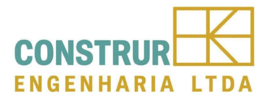
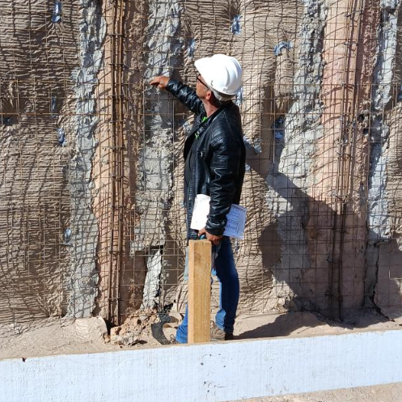
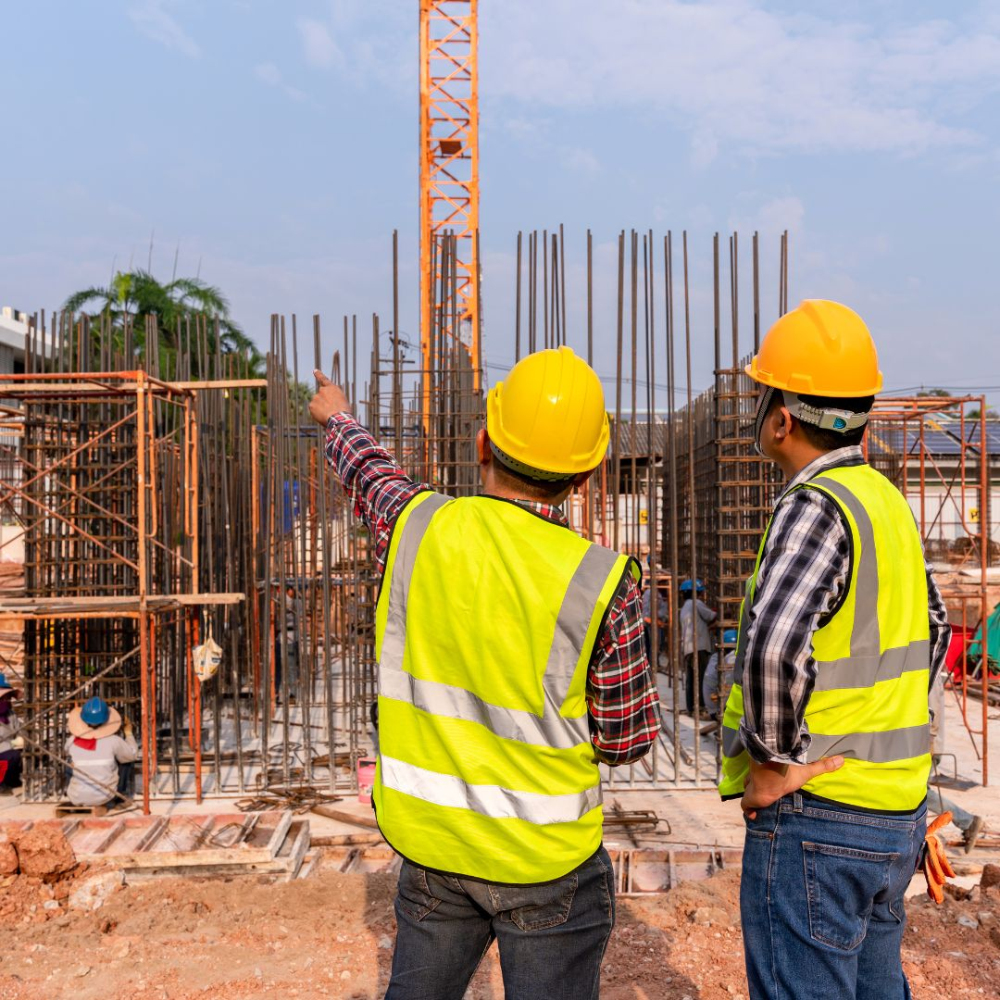
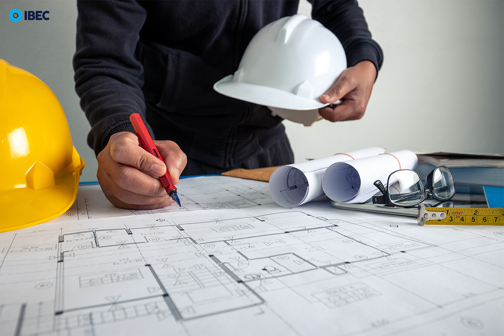
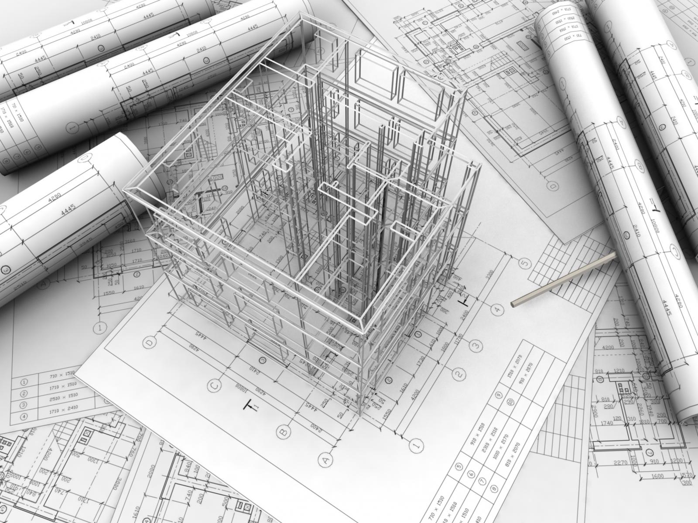

Oferecemos soluções completas em cálculo estrutural, projeto de fundações e instalações para obras residenciais, comerciais e industriais.
Fale com um engenheiroAnálises precisas de estruturas para garantir segurança e conformidade com normas técnicas.
Desenvolvimento de fundações robustas e eficientes para diversos tipos de solo e carga.
Planejamento completo de sistemas elétricos, hidráulicos e de infraestrutura para obras.

Acreditamos que a avaliação contínua da execução do trabalho é essencial para alcançar a qualidade desejada.

Sempre focamos em estudos relevantes para entender melhor as necessidades de cada projeto.

Utilizamos tecnologias avançadas para otimizar nossos processos e garantir satisfação dos clientes.
A Construr é uma empresa especializada em cálculo estrutural, projeto de fundações e instalações. Oferecemos soluções completas para obras residenciais, comerciais e industriais, com foco em segurança, eficiência e conformidade técnica.
O engenheiro responsável possui mais de 20 anos de experiência em cálculo estrutural, fundações e projetos de instalações. Sua expertise garante projetos executados com os mais altos padrões de qualidade e inovação.